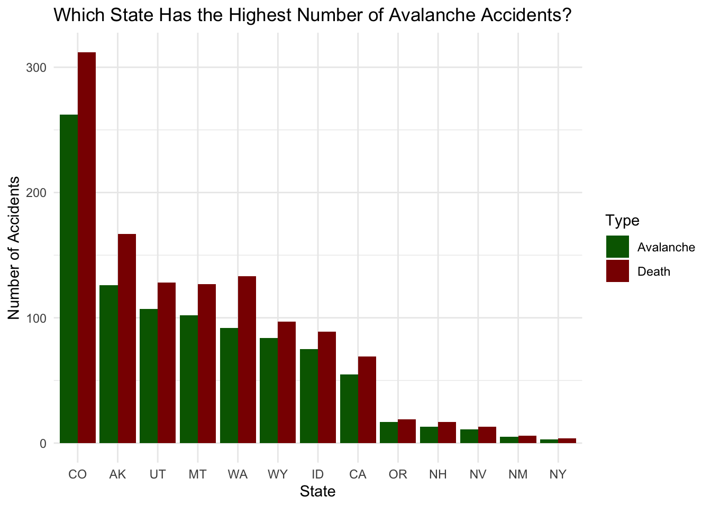

Analysis of Avalanche Incidents and Fatalities in the United States from 1950 to 2022.
Data is available thanks to Colorado Avalanche Information Center (CAIC)
image credit: Matea Nikolina via Unsplash
Avalanche Incidents and Fatality Analysis
Background
Data from CAIC 2022 1. Describe what is being shown 2. Describe variables being used 3. Describe interest in the analysis
Have Avalanche Incidents and Fatalities increased over the years?
Show the code
a_year %>%ggplot() +geom_line(aes(x = YYYY, y = count, color = type), linewidth =1) +labs(title ="Have Avalanche Incidents and Deaths Increased Over Time?", x ="Year",y ="Total Events") +scale_color_manual(values =c("#E69F00", "#0072B2"), name ="Incident Type", labels =c("Death","Avalanche"))+theme_minimal()
Does mode of transportation impact the number of accidents?
Show the code
accidents %>%filter(TravelMode %in%c("Foot", "Ski", "Snowboard", "Snowshoe")) %>%group_by(TravelMode) %>%summarize(total_accidents =n(), total_deaths =sum(Killed)) %>%ggplot(aes(x =fct_reorder(TravelMode, desc(total_accidents)), y = total_accidents)) +geom_col() +labs(title="Which Mode of Transportation has the Highest Number of Incidents?",x ="Travel Type",y ="Number of Avalanches" )+theme_minimal()
Show the code
travel_type %>%ggplot() +geom_col(aes(x =fct_reorder(TravelMode, desc(count)), y = count, fill = type), position ="dodge") +labs(title ="What is the distribution of accidents and deaths for the top modes of transportation?", x ="Travel Mode", y ="Number of Incidents") +scale_fill_manual(values =c("darkgreen", "darkred"), name ="Incident Type", labels =c("Avalanche", "Death"))

Which States have highest consentration of Avalanche Accidents?
Show the code
accidents %>%group_by(State) %>%summarize(total_accidents =n()) %>%filter(total_accidents >1) %>%ggplot() +geom_col(aes(y = total_accidents, x =fct_reorder(State, desc(total_accidents)))) +labs(title ="Which State has the Highest Number of Avalanches?",x ="State",y ="Total Accidents") +theme_minimal()
Show the code
accidents_state %>%ggplot() +geom_col(aes(x =fct_reorder(State, desc(count)), y = count, fill = type), position ="dodge") +labs(title ="Which State Has the highest number of avalanche incidents?", x ="State", y ="Number of Incidents") +scale_fill_manual(values =c("darkgreen", "darkred"), name ="Incident Type", labels =c("Avalanche", "Death")) +theme_minimal()